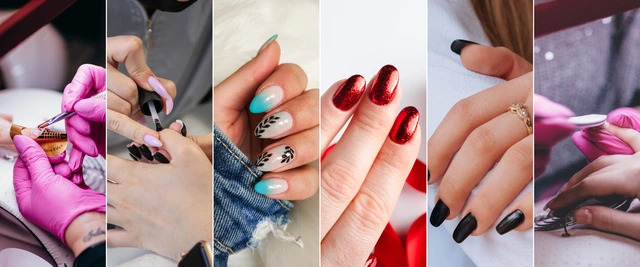

Você está pronta para descobrir o segredo das unhas perfeitas?
Descubra agora o segredo por trás das unhas de fibra que estão transformando vidas e carreiras...

Agora, vamos entender um pouco mais sobre seu negócio e como ele pode crescer com as unhas perfeitas.